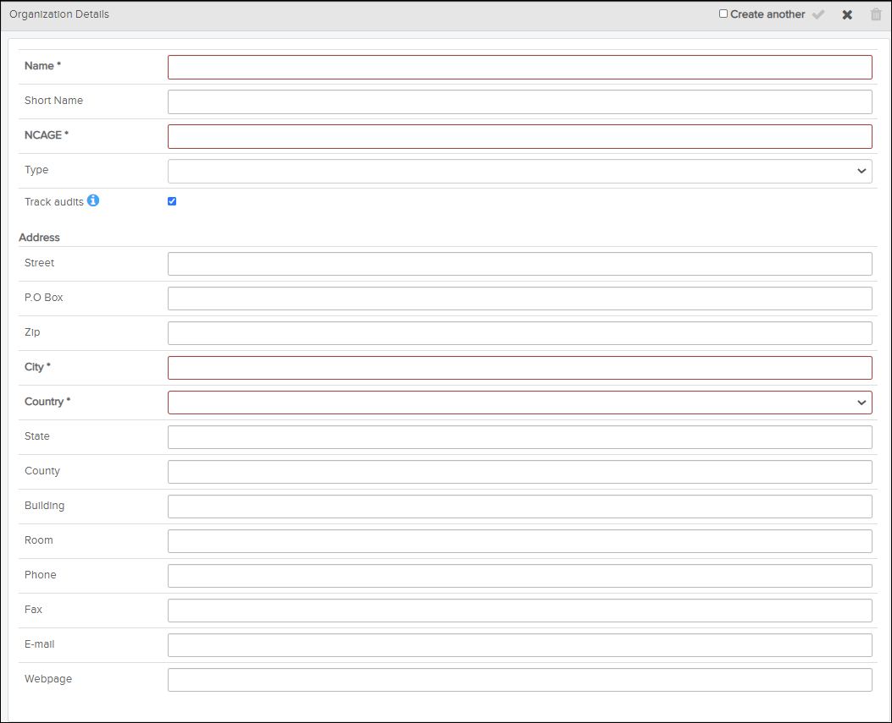

-
Click the
 Organizations icon on the header bar to open the
Organizations page.
Organizations icon on the header bar to open the
Organizations page.
-
In the top of the Organizations section, click the
 Create new icon.
An empty Organization Details pane appears on the right side.
Create new icon.
An empty Organization Details pane appears on the right side.
Organization Details
-
Click the
 Save icon.
Save icon.
Access Control Manager now has a new entry for the organization. If you activated the Create another checkbox, a new blank form shows. If not, the new organization will show in the list of organizations on the left side pane.
In addition, a new "[NCAGE] Organization Administrators" role is automatically created for the organization. The "[NCAGE]" beginning of the role name is set based on what you typed into the NCAGE field. A system administrator can set the necessary privileges for this role. Then the system administrator can add the first user(s) to the organization and organization role. Then whoever is assigned this role can add or remove other users to this role as needed. For details on how to assign privileges to a user role/group, refer to Manage Function Privileges and Data Access Permissions. For details on how to add a user to an organization, refer to Change Organization for a User. For details on how to edit users in the "[NCAGE] Organization Administrators" role, refer to Edit User Group / User Role.
To allow the new organization’s users access to function privileges and data
permissions, an administrator needs to configure the
Organizations item category on the  Privileges page, then configure the User
Groups / User Roles item categories.
For example, if an organization should be able to publish data
with Data Manager, a
system administrator needs to give full
(Read/Write/Delete)
permissions to for the organization. Then a system or organization administrator can
create/configure additional user roles for the organization with full
(Read/Write/Delete)
permissions to ) permissions. Refer to Manage Function Privileges and Data Access Permissions.
Privileges page, then configure the User
Groups / User Roles item categories.
For example, if an organization should be able to publish data
with Data Manager, a
system administrator needs to give full
(Read/Write/Delete)
permissions to for the organization. Then a system or organization administrator can
create/configure additional user roles for the organization with full
(Read/Write/Delete)
permissions to ) permissions. Refer to Manage Function Privileges and Data Access Permissions.